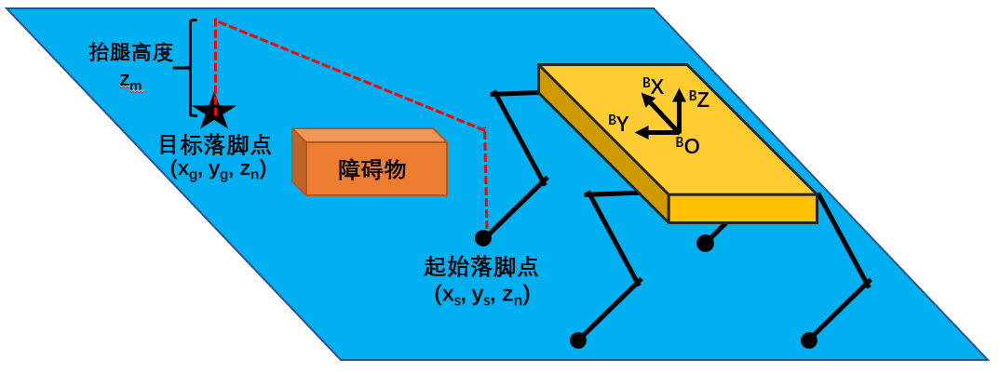
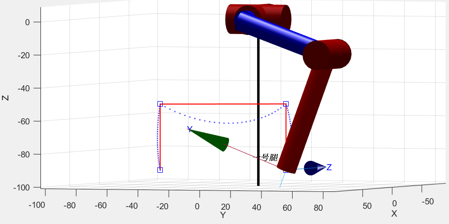
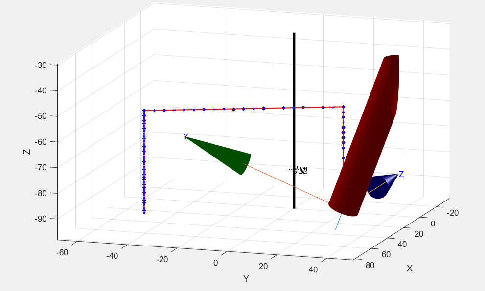

足端轨迹规划
四足机器人足端轨迹规划是自由步态规划中重要的一部分，足端轨迹影响着四足机器人迈步的准确性、行走的稳定性和足端落地的冲击力，同时影响着四足机器人的越障能力。 在周期步态之中，四足机器人的移动追求快速性，所以足端运动速度较大，足端轨迹规划的优化目标轨迹的平滑性。而在自由步态中，四足机器人的移动追求平稳性和越障性。所以本文中设计了一种矩形摆动轨迹，使得摆动腿在移动过程中与支撑面保持一定高度，尽可能地越过地面上可能存在的障碍。 如图2-5所示，矩形摆动轨迹分为三个阶段：竖直抬起阶段、水平移动阶段和竖直下降阶段。假设在本体坐标系下起始落脚点坐标为\(\left(x_{s}, y_{s}, z_{n}\right)\),目标脚点坐标为\(\left(x_{g}, y_{g}, z_{n}\right)\)，摆动腿将竖直抬起一定的高度\(z_m\)，然后水平移动到落脚点正上方，最后竖直落下。为了减少足端落地时带来的冲击力，需要在规划中给竖直下降阶段分配更多的运动时间，来降低足端运动速度。设单次摆动所需的时间为\(T_m\)，竖直抬起阶段用时为\(T_m/4\),水平移动阶段用时为\(T_m/4\)，竖直下降阶段\(T_m/2\)。  则可得到四足机器人的足端运动轨迹在本体坐标系下的方程， \[ \begin{align} F_{x}(\mathrm{t})=\left\{\begin{array}{lr} x_{s} & , t \in\left[0, \frac{T_{m}}{4}\right) \\ x_{s}+\frac{4 \cdot\left(x_{g}-x_{s}\right)}{T_{m}} \cdot\left(\mathrm{t}-\frac{T_{m}}{4}\right) & , t \in\left[\frac{T_{m}}{4}, \frac{T_{m}}{2}\right) \\ x_{g} & , t \in\left[\frac{T_{m}}{2}, T_{m}\right] \end{array}\right.\tag{2-15}\\ F_{y}(\mathrm{t})=\left\{\begin{array}{ll} y_{s} & , t \in\left[0, \frac{T_{m}}{4}\right) \\ y_{s}+\frac{4 \cdot\left(y_{g}-y_{s}\right)}{T_{m}} \cdot\left(\mathrm{t}-\frac{T_{m}}{4}\right) & , t \in\left[\frac{T_{m}}{4}, \frac{T_{m}}{2}\right) \\ y_{g} & t \in\left[\frac{T_{m}}{2}, T_{m}\right] \end{array}\right.\tag{2-16}\\ \quad F_{z}(\mathrm{t})=\left\{\begin{array}{ll}z_{n}+\frac{4 \cdot z_{m}}{T_{m}} \cdot \mathrm{t} \quad&, t \in\left[0, \frac{T_{m}}{4}\right)\\ z_{n}+z_{m} & , t \in\left[\frac{T_{m}}{4}, \frac{T_{m}}{2}\right) \\ z_{n}+2 \cdot z_{m}-\frac{2 \cdot z_{m}}{T_{m}} \cdot \mathrm{t} & , t \in\left[\frac{T_{m}}{2}, T_{m}\right]\tag{2-17} \end{array}\right. \end{align} \]
在实际控制过程中，运动学逆解算的输入值是足端坐标，所以需要将末端轨迹离散化，如果离散化后的控制点数量过少，则会导致实际运动轨迹无法很好地跟踪期望轨迹，因为末端在两个控制点之间的实际轨迹是一条曲线。假设只取每个阶段的终止位置进行逆解算控制，如图2-6所示，图中蓝色的方形为所取的控制点，红色实线代表期望轨迹，蓝色虚线代表实际运动轨迹。可以看到实际运动轨迹有着较大的偏差，在水平平移阶段抬腿高度有所下降影响越障性能，并且在竖直下降阶段偏斜着接触地面，这会给四足机器人带来侧向冲击力，影响稳定性。 
所以需要在轨迹上取适量的控制点，在竖直上升轨迹和水平移动轨迹上各取10个控制点，在竖直下降轨迹上取20个控制点，再次在matlab中进行仿真。如图2-7所示，实际足端运动轨迹很好地跟踪了期望轨迹。在实际控制过程中，将以20Hz的频率依次发送控制点的结算结果，这样即满足了轨迹跟踪精度，也控制了竖直下降阶段足端的速度。 